生机农业的「物质层」（矿物）与「信息层」（频率）都已有手段，唯独能量层缺一块—— 土壤与水该怎么「动」、用什么材料碰它、在什么温度下它才活。 维克多·舒伯格（1885–1958）的全部遗产里，恰好有三样东西可以直接下地： 金犁（铜犁）、活水涡旋净水、蛋形冷堆肥。
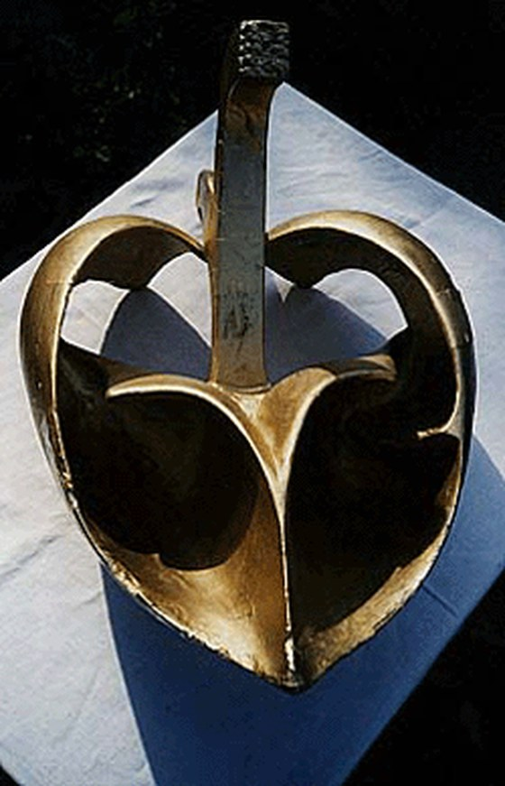
生机农业是一套完整的技术，但它自己把体系分成三层：物质、能量、信息。 我们今天不讲矿物配方（那是物质层），也不讲频率写入（那是信息层）—— 只讲中间那一层：土和水该怎么「动」，用什么材料去碰它，在什么温度下它才活着。 这一层，舒伯格已经用一辈子把它想清楚了，而且已经有人把它做成了犁、做成了管子、做成了堆肥坑。
| 层级 | 对应技术 | 代表人物 / 体系 | 在生机农法里的落点 | 状态 |
|---|---|---|---|---|
| 物质层 | 矿物平衡理论 | Lutie Larsen（承 William Albrecht） | 木鱼石 + 沸石，3.9 kg/亩 | ✅ 已有成熟产品与数据 |
| 能量层 | 涡旋 / 内爆 / 冷发酵 / 铜催化 | Viktor Schauberger | 灌溉水能量化 + 蛋形堆肥 + 金犁 | ⚠️ 本专栏要补的一格 |
| 信息层 | 频率写入（Radionics） | SE-5 / 内在数据场分析 | 矿物介质经频谱信息处理 | ◻︎ 设备方法论存在，边缘领域 |
舒伯格的发明清单很长：内爆引擎（Repulsine）、飞碟式动力装置、鳟鱼涡轮机、 水活化装置、排斥器（Repulsator）、金犁、波纹盘……但农业能直接用的、且有实物、有图纸、有专利号的， 归拢起来只有三样，正好覆盖「土—水—肥」三条线：
管土壤。奥地利专利 166 644（1948）。铜质、蛋形、双翼内曲犁体，滚动式轻柔翻土，不切断土壤毛细管。
→ 本专栏第二节，8 分钟，用时最长。
管水。向心涡旋管、蛋形熟化罐、文丘里氧分选。让水回到「冷 + 向心 + 有矿物 + 有结合态 CO₂」的天然状态。
→ 第三节，7 分钟。
管肥。蛋形罐负压冷发酵、围树桩建堆、铜锌催化件。走低温慢发酵，保住养分不被高温烧掉。
→ 第四节，5 分钟。
三样东西共用同一套底层语法：用「冷」而非「热」，用「向心」而非「离心」，用「铜」而非「铁」。
→ 这就是下一节要讲的一句话总纲。
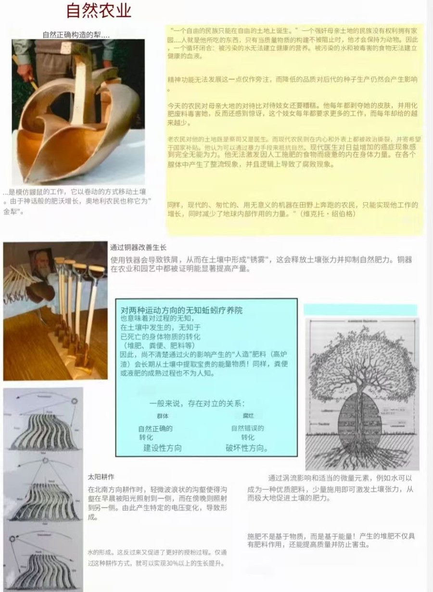
舒伯格一辈子只反对一件事：人类把「爆炸式」的运动方式用到了生命身上。 热、离心、破坏——这是炸药的逻辑；冷、向心、构建——这是生长的逻辑。 他所有农业技术，都只是这一句话在不同场景下的实现。
| 信条 | 含义 | 在生机农法里对应什么 |
|---|---|---|
| 土壤是「活」的 | 肥力靠水循环 + 微生物自然转化，不靠化肥 | 与生机农业「恢复活的土壤」完全同构 |
| 水是肥力的搬运工 | 水在自然中螺旋流动并携带养分与能量；直管、高温、高压会「杀死」水 | 灌溉水能量化处理的全部理由 |
| 森林是水的孕育者 | 无森林 → 无水 → 无肥力（「树合成水」） | 田间防护林、覆盖物、树桩堆肥 |
| 铜优于铁 | 铁制农具破坏土壤磁性/能量，铜制农具与之和谐 | 金犁——本专栏第二节主角 |
| 温度是灵魂 | 土壤与水的温度决定养分能否被吸收（黄金区间约 4–9 ℃） | 冷堆肥、低温活水、覆盖物控温 |
| 内爆优于爆炸 | 自然用「向心·冷却·构建」，人类用「离心·发热·破坏」 | 涡旋向心设计、拒绝高速旋转 |
下面这张表是整场演讲的「总开关」。听完这一页，后面三节的技术细节都只是它的注脚—— 每当我们做一个农业操作，只要问一句：它是变冷还是变热？是向心还是离心？是在构建还是在破坏？
| 维度 | ❄️ 自然（内爆 · implosion） | 🔥 人工（爆炸 · explosion） |
|---|---|---|
| 运动方向 | 向心、内卷、收缩 | 离心、外抛、扩散 |
| 温度走向 | 冷却，趋近 +4 ℃ | 发热，升温 |
| 能量形态 | 负压、致密、聚能 | 正压、稀薄、耗能 |
| 水的状态 | 溶解氧↑、表面张力↓、结构有序、可携带养分 | 死水、结构崩解、携带杂质 |
| 对土壤 | 保留毛细管、保留微生物栖息地 | 切断毛细管、犁底层板结 |
| 对应农事 | 金犁轻柔滚动翻土 · 涡旋活水 · 冷堆肥 · 天然覆盖 | 高速旋耕 · 直管高压灌溉 · 高温堆肥 · 地膜升温 |
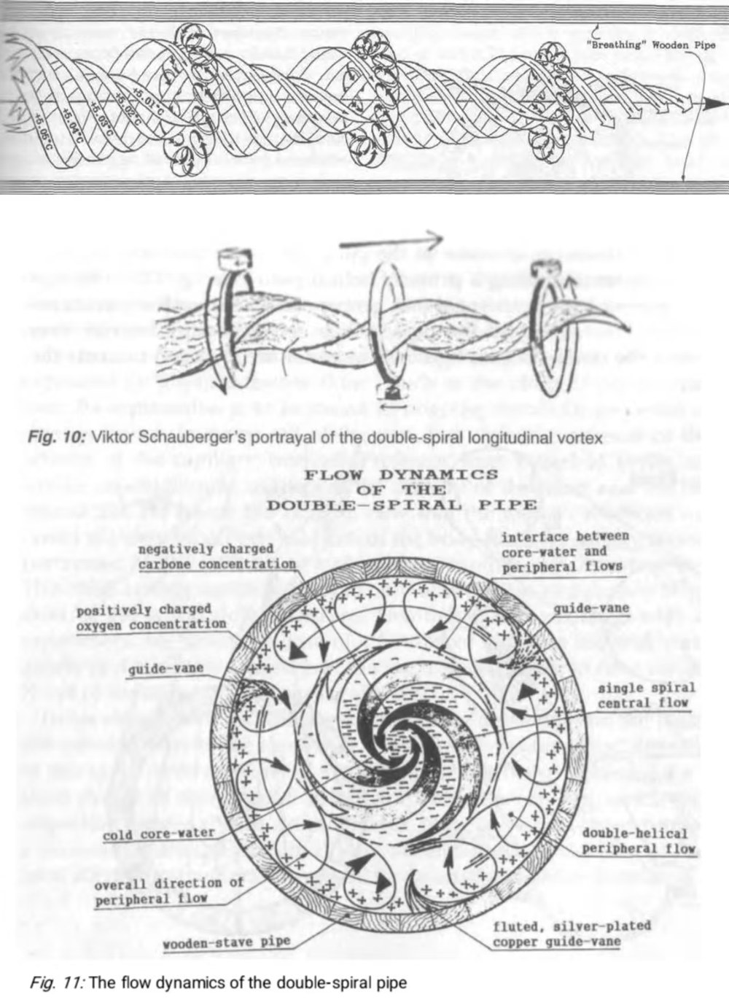
这是舒伯格全部农业遗产里唯一有专利号、有实物、有第三方署名试验报告的一件东西， 也是唯一一件今天仍在被德国、奥地利、瑞士的有机农业圈小批量复刻的农具。 它非常简单：把犁头的材料从铁换成铜或磷青铜，把犁壁的形状改成蛋形内曲——仅此两件事。 文献记载的结果是：产量增加 30%。
二战刚结束，奥地利粮食短缺。舒伯格给出的方案不是化肥，而是一把犁。 1948 年，他与萨尔茨堡的工程师 Franz Rosenberger（罗森伯格）合作， 以「合金耕作设备」立项开发，即后来所称的 Golderner Pflug（金犁）， 并取得奥地利专利 166 644——专利的核心权利要求就一句话： 与大地接触的表面应由铜或铜合金制成。
「这个装置是维克多·舒伯格对战后存在的粮食短缺的解决方案。这种犁的犁头主要由铜制成，形状非常特殊。 舒伯格认为，为了点燃生命过程，首先需要的是正确的运动概念（行星运动）和支持这些过程的建筑材料（主要是铜）。 相反，舒伯格还在实验中发现，（生锈的）铁会抑制生命过程。使用这种类型的犁，地球会以滚动的方式轻轻地移动。 仅通过这些措施，就有文献记载，产量就增加了 30%。」 ——《Implosion-EV.de · 金犁》项目页（德文原站中文转述）
金犁不是「铜做的普通犁」。它的犁体是一个蛋形的、双翼向内卷曲的壳体， 土不是被「翻转」上去，而是沿着曲面被滚动着抬升、左右分开、再轻轻放回。 舒伯格的原话是：它模拟鼹鼠的工作方式。
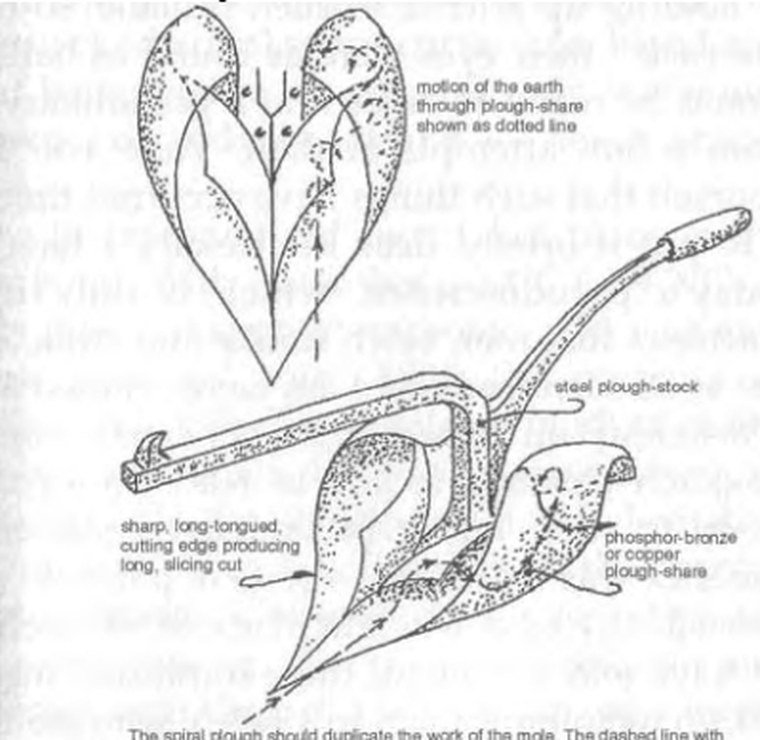
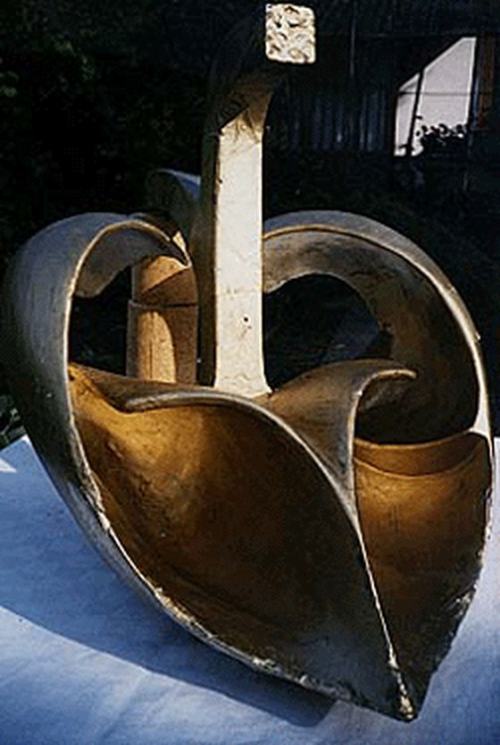
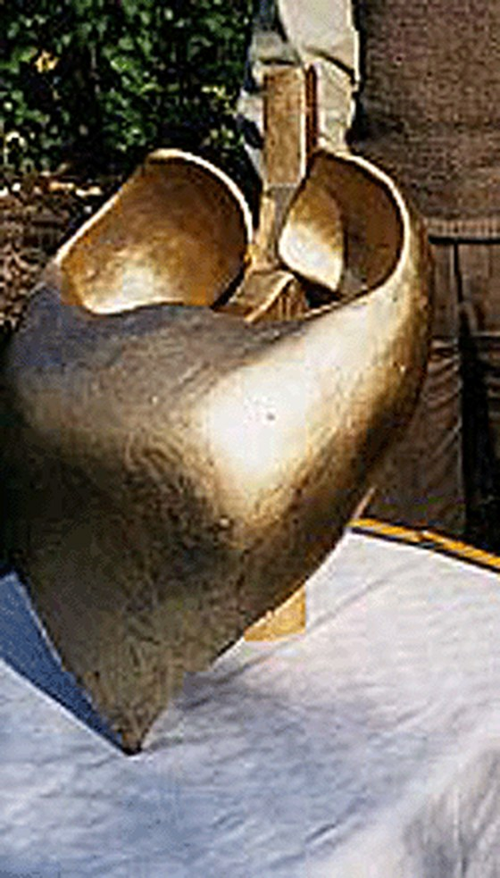
注意图 2-1 的标注：steel plough-stock（钢柱）与 copper plough-share（铜犁头）是分开的。 这解释了成本问题——舒伯格本人也不是要你把整台农机换成纯铜， 而是把真正与土壤发生接触的那一面换成铜/磷青铜。这一点对今天的落地成本非常关键。
德国生物工程教授 Jürgen Sock 以舒伯格为蓝本制作了现代「生物犁」（Bio-Pflug）， 并指出金犁体系里有一项必要的结构在公开资料中被刻意省略了——流动肋（Strömungsrippen）。 他的做法是在犁体上加肋条，让土壤的流动与犁体曲面「顺畅地结合」，并在两块内曲犁壁上方形成悬浮空间， 让犁沟里的土「放松并获得生长能量」。
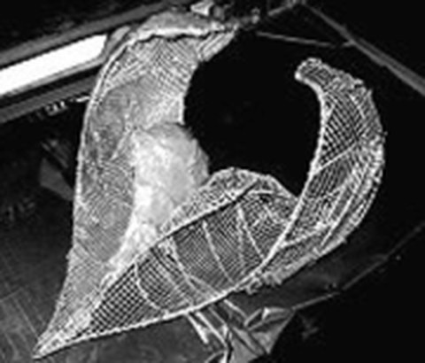
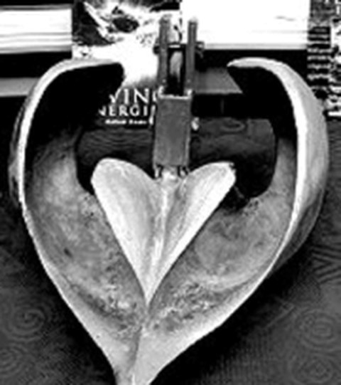
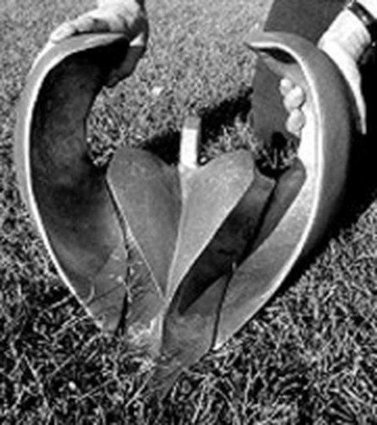
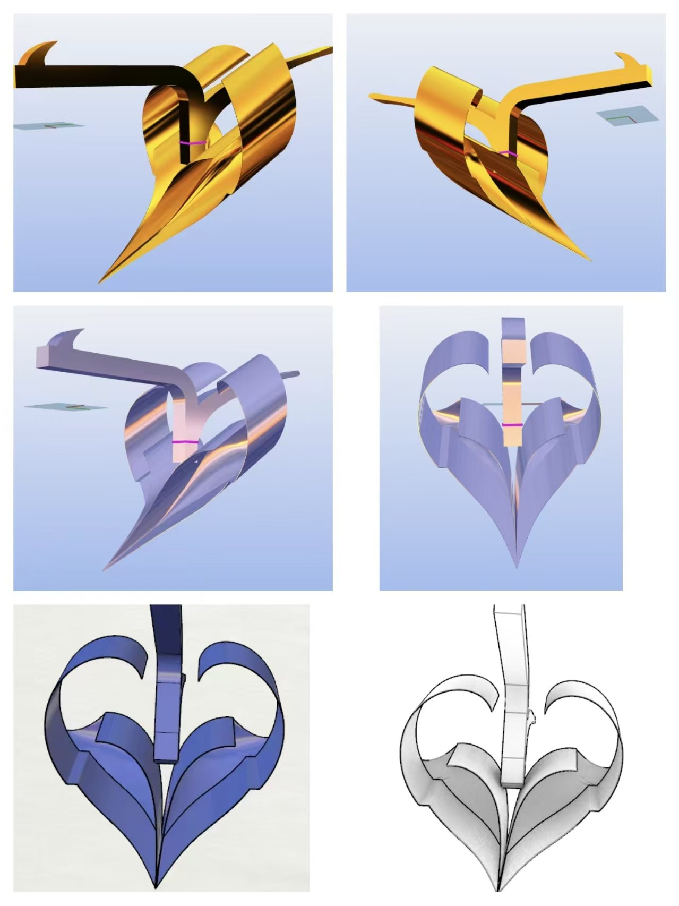
这是全场最需要「讲清楚」的一点，也是最容易被误读的一点。 舒伯格的判据不是硬度、不是价格、不是会不会被磁铁吸，而是材料的电磁性质：
| 材料大类 | 舒伯格分类 | 对土壤做了什么 |
|---|---|---|
| 铜 / 银 / 金 / 锡及其合金 | ✅ 抗磁性 | 产生「有益的生物电磁电离」，增强生长与土壤肥力；磨损下的铜颗粒催化、保水、不破坏土壤磁导率 |
| 铁 / 钢 / 不锈钢（铁基合金） | ❌ B 型电磁（铁磁·铁电） | 产生「微小铁电/铁磁电流」，分解营养水分子、释放土壤电位、锈膜成为病原菌温床 |
这里有一个现代农学一定会追问的问题：不锈钢也不行吗？ 316（奥氏体）不锈钢在日常状态下磁导率约 1.005–1.02，确实几乎不被磁铁吸引—— 所以从「磁导率数值」看，说它抗磁性并没有错。 但舒伯格的分类标准是元素种类，不是磁导率数字：316 的基底仍是铁（62–68%）+ 镍（10–14%）， 在舒伯格体系里与钢犁同属「铁基 B 型电磁」。 如果既要硬度又要抗磁性，他的答案是磷青铜。
把资料库里所有与铜犁相关的试验记录归拢，按证据强度从高到低排列：
| 强度 | 出处 | 试验内容 | 结果 |
|---|---|---|---|
| 🥇 最强 | 《隐藏的自然》19.1 · 克莱斯海姆田间试验 | 钢犁与镀铜犁交替条耕，其余条件完全相同 | 玉米高 6–8 英寸、穗更饱满；部分增产达 40% |
| 🥇 最强 | 《肥沃的地球》· 田间试验第 6 号 | 铜处理区 vs 铁处理区 · 青贮玉米 · 7 周对比 | 估计增产 25%，植株更强壮、颜色更深、穗发育更早 |
| 🥇 最强 | 1949.11.18 实验室报告 | Leopold Rauch & Söhne 实验室出具 · 黑麦样品分析 | Cu 处理区：穗长超 15 cm、每穗达 104 粒 |
| 🥈 中等 | 《肥沃的地球》· 铜制螺旋犁 | 缺水土壤，铜犁 + 天然化合物施肥，无需人工肥料 | 第一年增产约 60% |
| 🥈 中等 | 高山农场试验 · 基茨比厄尔 · 海拔 1100 m | 严重退化土壤上的铜犁试验 | 穗长 +20%，估计增产 30–50% |
| 🥈 中等 | 《中》5.10 · Heinz Erven 葡萄试验 | 每株埋罐，内装 1 kg 铜 + 1 kg 锌 + 雨水 + 牛角骨粉 | 5 周后 2 株藤明显更茂盛，数百人目睹、多人成功复制 |
| 🥉 观察级 | PKS 铜制园林工具（商业化后） | 铜合金园林工具的长期使用记录 | 文献记载产量增加 30% |
| 维度 | 纯铜 | 磷青铜（铜+锡+磷） | 不锈钢 |
|---|---|---|---|
| 舒伯格分类 | ✅ 抗磁性 | ✅ 抗磁性（铜 + 锡同属抗磁） | ❌ 铁基底 + 镍（顺磁） |
| 电磁性质 | 生物电磁电离 | 同铜，无铁磁破坏 | 铁磁/铁电电流，破坏营养水分子 |
| 硬度 / 耐磨 | ⚠️ 较软 | ✅ 接近钢 | ✅ 硬 |
| 磨损产物 | 铜颗粒：催化、保水、不破坏磁导率 | 铜 + 极微量锡（≤0.2 mg/kg/年） | 铬/镍溶出，持久不可逆 |
| 土壤生态风险 | ✅ 铜为必需元素，微溶有益 | ✅ 锡溶出量级远低于植物毒性阈值（50–200 mg/kg） | ❌ 重金属累积 + 铁犁效应 |
| 初始成本 | 高（约 5–8 万元/吨） | 较高（铜基 + 锡磷） | 中（约 1.5–2.5 万元/吨） |
| 综合 | ✅ 增产可覆盖成本 | ✅ 最佳平衡（耐磨 + 生态兼容） | ❌ 低成本背后是减产与生态负债 |
金犁的真实局限是：它是手工/小型机械农具，至今没有大规模商业化农机。 但这不等于它没法用。恰恰相反——它能以一种「分工」的方式嵌进现代耕作体系里： 金犁管土壤的物质与能量（活性底层），免耕直播机管少扰动，天然覆盖物管水与碳的存储循环。 三者各管一摊，不是二选一。
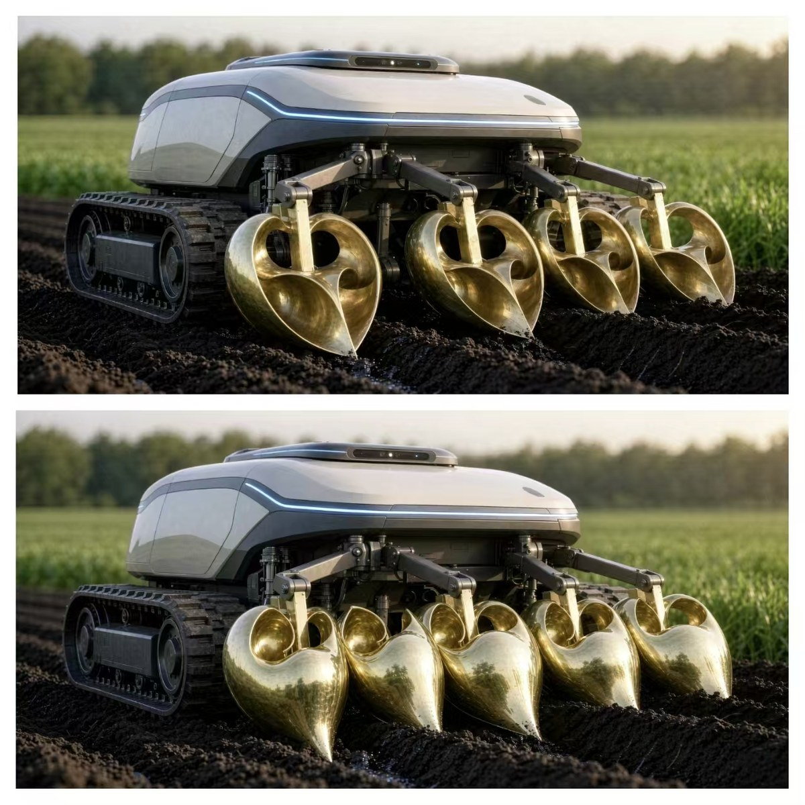
| 序 | 动作 | 参数与理由 |
|---|---|---|
| ① | 金犁浅松 | 5–10 cm 深，1–2 次/年。铜的电磁效应改善土壤能量；滚动式翻土不打散微生物栖息地、不切断毛细管，同时能切断杂草根茎。 |
| ② | 天然覆盖 | 秸秆/落叶/堆肥 5–10 cm。保墒 + 抑草 + 降温 + 提供栖息地 + 供给腐殖质，五合一。 |
| ③ | 免耕直播 | 免翻耕直接播种，保护土壤结构；它补的是金犁做不到的大规模效率与最小扰动。 |
| ④ | 涡旋活水 | 双曲漏斗/螺旋管激活灌溉水，提升输送营养能力、助微生物（下一节）。 |
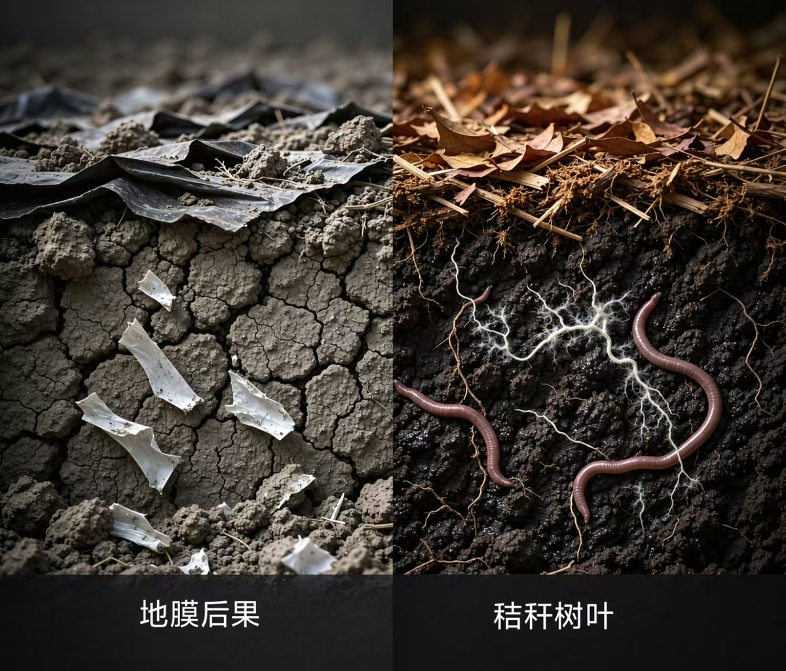
| 方面 | 现状 |
|---|---|
| 试验规模 | 均为小地块（数十 m² 到数公顷），无大规模产业化验证 |
| 重复性 | 仅 Erven 葡萄实验有「多人成功复制」记录，其余独立复现信息缺失 |
| 对照控制 | 萨尔茨堡试验有同行认可的程序，但未随机双盲、样本量未公开 |
| 量化数据 | 增产 60% 为第一年数据，后续年份未持续跟踪 |
| 外部验证 | 除 1949 年实验室报告外，无同行评审期刊的独立复现研究 |
| 土壤长期影响 | 专家担心「铜浸出」，撤回反对意见后未提供长期跟踪数据 |
| 「翻两次」「铜抑菌」 | 在资料库中是定性推论，无独立复现；农田是开放生态系统，直接添铜可能连有益菌一起抑制，且铜离子随磨损释放有重金属富集风险。更稳妥的是表层功能化涂层（纳米银/铜陶瓷镀层）靶向抑制表层机会致病菌 |
舒伯格说过一句话，是整套技术的第一性原理：他处理水的目标从来不是「把水弄干净」，而是「把水养成熟」。 干净的极端是蒸馏水——而在他眼里那是「幼水」，是饿的水： 进入土壤会反过来掠夺矿物质，进入人体会浸出钙镁钾。 农业灌溉真正需要的，不是无菌水，而是有来路、有底子、有底气、有态度的活水。
自然水体（山溪、河流）从不走直线。舒伯格观察到的模式是：水在河道里走的是双螺旋—— 底流与表流方向相反，互相约束，在中央形成一条向心收缩、持续降温、始终保持负压的轴。 人类的做法恰好相反：直管、高压、高温，把这条轴拆掉了。
| 要素 | 自然河道的做法 | 人类工程的做法 | 结果差异 |
|---|---|---|---|
| 路径 | 弯曲、双螺旋、切向进水 | 直管、轴向进水 | 螺旋 → 离心力把氧与杂质甩向管壁，中心形成低温高密度流 |
| 速度 | 慢，靠地形落差 | 高速泵送 | 高速 = 摩擦升温 + 正压（外爆），与目标背道而驰 |
| 温度 | 趋向 +4 ℃（越靠中心越冷） | 暴晒、升温 | +4 ℃ 时 CO₂ 溶解度约为 20 ℃ 的两倍 |
| 结果 | 溶解氧↑、表面张力↓、结构有序、能携带养分 | 结构崩解、携带杂质、易氧化 | 这是「能量态」与「物质态」的分野 |
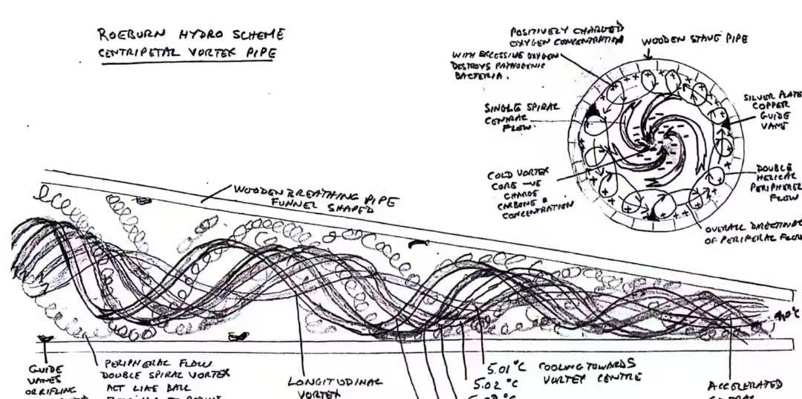
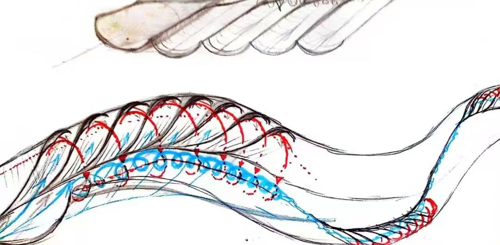
舒伯格的水处理专利（117749 / 142032 / 166644）本质是一套完整工艺，不是单一零件。 它的工程实现就是一只蛋形容器：铜制或铜合金（可镀银），外壁绝缘防能量泄漏， 底部进 CO₂、中间是反应室、顶部是气体分离器。
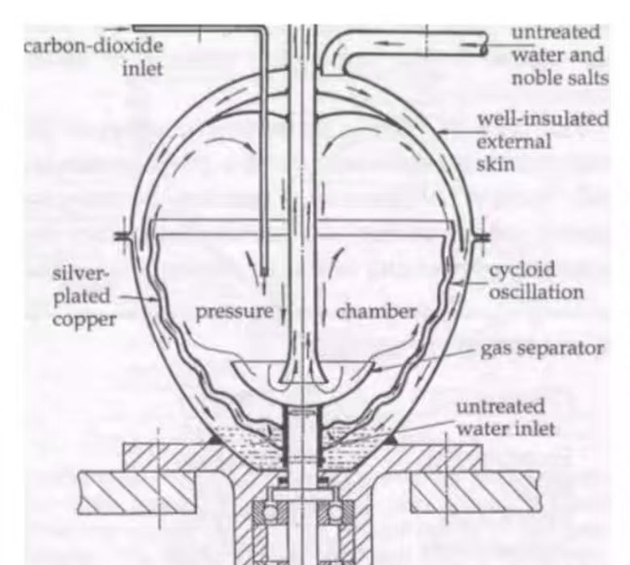
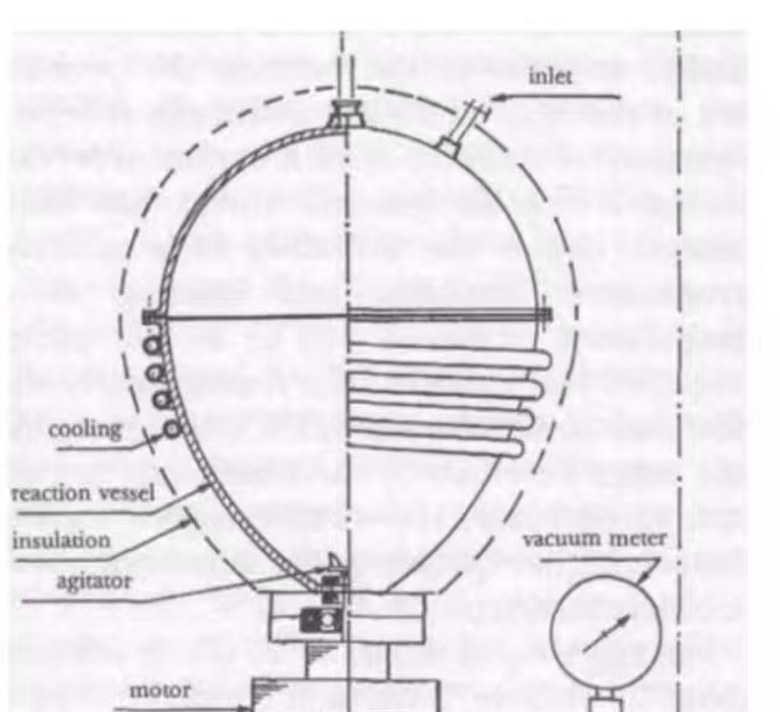
| 步 | 动作 | 关键参数与理由（出处） |
|---|---|---|
| 1 | 煮沸 / 冷却 | 先煮沸去氯，冷却至 +17–20 ℃（严禁含氯）——《能源演变》p162 |
| 2 | 加矿物盐 | 密封容器内加入五种盐——《能源演变》《专利 142032》 |
| 3 | 密封蛋形容器 | 铜/铜合金（可镀银），外壁碳氢化合物绝缘防能量泄漏——《活的能量》21 章 |
| 4 | 注入 CO₂ | 底部进 CO₂、排出等体积水；约 10 L 容器配 4 L CO₂——《能源演变》p153 |
| 5 | 涡旋熟化 | 约 300 rpm，自动交替转向内卷 45 分钟；上午 9 点前、避雷暴——《活的能量》21 章 |
| 6 | 缓慢降温 | 17 ℃ → +4 ℃，不能太快；专利称之为「黄金过程：17 ℃ 起、+4 ℃ 止」——《专利 142032》 |
| 7 | 形成真空 | 0.8–0.96 绝对大气压——CO₂ 被吸收生成碳酸，容器自然形成真空 |
| 8 | 避光熟化 | +3–4 ℃ 静置 24 h、完全黑暗——《活的能量》21 章《专利 117749》 |
| 9 | 低温使用 | ≤7 ℃ 小口取用，超 9 ℃ 即崩解，24 h 内用完——《能源演变》p163 |
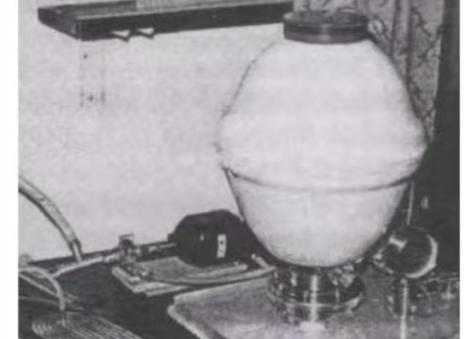
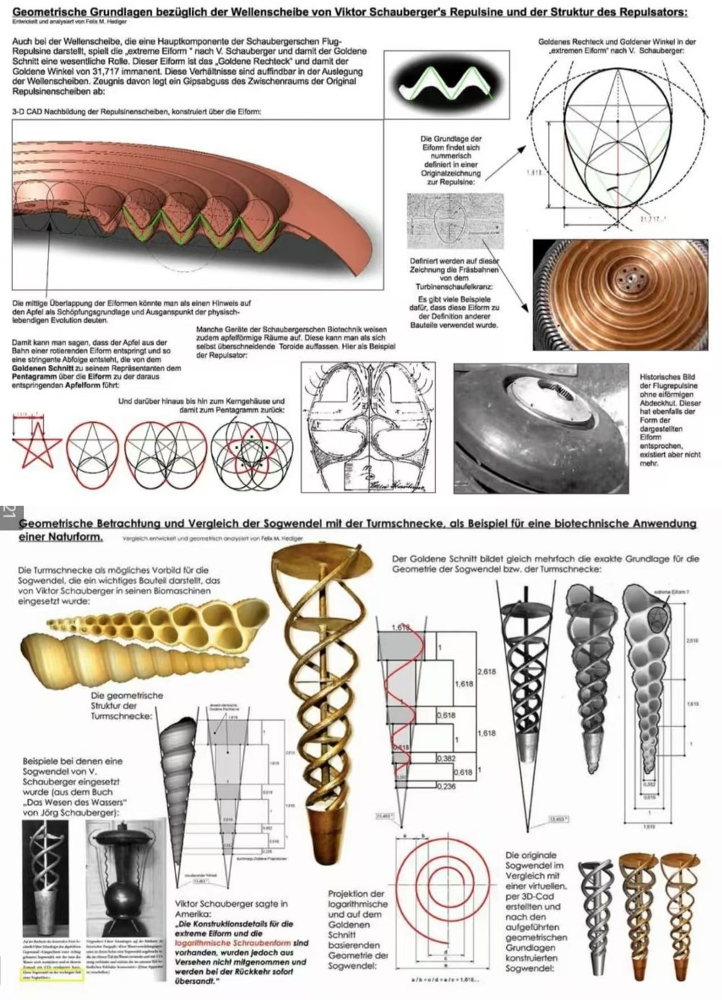
蛋形熟化罐是舒伯格的一条路线。资料库里还并存着另一条实现路径——它借用的不是蛋形，而是「三个工作体绕中轴轮流变化」这个结构。 两条路线的共同点是：都不用电、不加压，只靠重力与相位差让水自己循环起来。
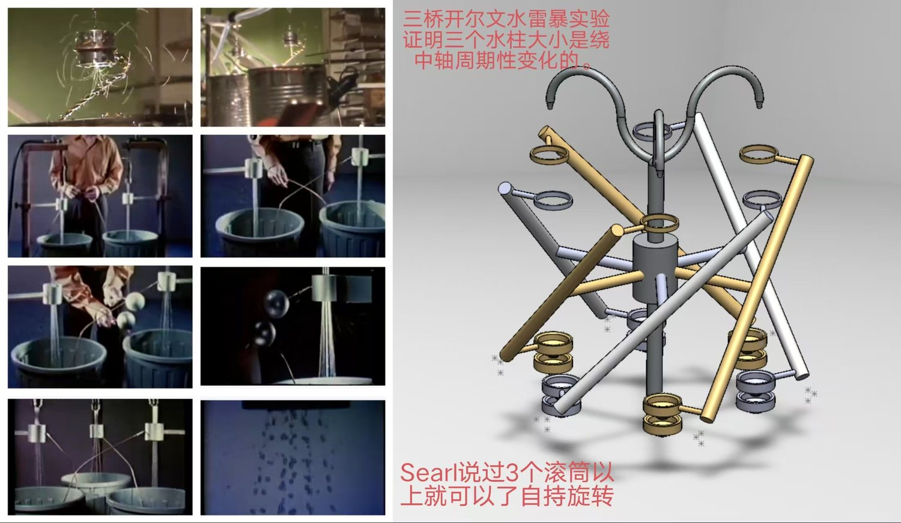
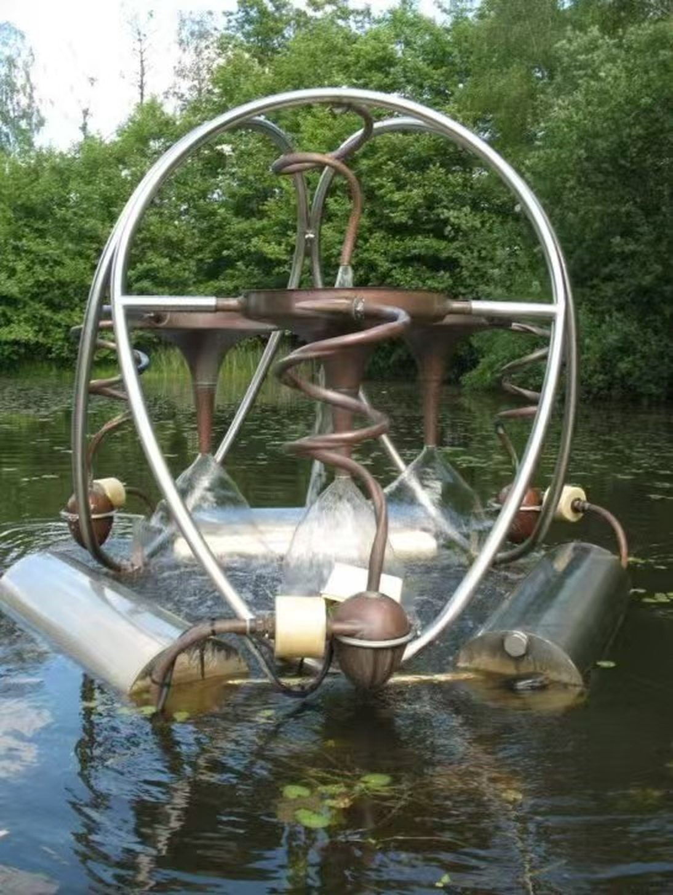
这是本节最容易被讲错、也最有实用价值的一段。 很多人把舒伯格的涡旋工艺当成「不用氯也能杀菌」的神器，但资料库里的结论恰恰相反，而且更精确： 涡旋工艺的杀菌机制是「氧分选」，不是「化学杀光」；它可以提升与熟化水质，但不能替代水源级消毒。
| 对比 | 氯 · 化学氧化杀菌 | 文丘里 / 涡旋 · 氧分选灭菌 |
|---|---|---|
| 杀菌方式 | 氧化杀光所有细菌（有益 + 有害） | 只淘汰对过量氧敏感的致病菌，保留有益菌 |
| 副产物 | 「攻击性氧」与癌症关联、脂肪组织累积、削弱免疫微生物 | 无化学残留 |
| 机制 | 无差别氧化 | 涡旋叶片摩擦微升温 → 氧气析出集中管壁 → 中心缺氧低温（趋 +4 ℃）→ 细菌向中心外围迁移 → 被局部高氧「淹没」灭活 |
吸附已溶解的氯。涡旋去不掉它，这一步谁也不能省。
舒伯格自家矿泉水专利 #142032 里用的就是冷汞灯 UV。用紫外线，不用氯。
在消毒之后，把水的结构、气体与能量状态调整回「活」的一侧。注意：这一环是"活化"而不是"净化"，它不能替代上面任何一步。
高转速产生强离心 = 摩擦升温 + 正压 = 外爆（explosion），把水甩向外壁。 正确做法是低速、切向进水、顺时针内卷——行星式运动，向内螺旋、冷却致密、负压。快，是错的。
| 标准 | 舒伯格的做法 | 农业端怎么落 |
|---|---|---|
| 有矿物 | 适量矿物盐（约 12 °dH），不追求纯 | 灌溉水不必软化；矿物介质（木鱼石/沸石）与活水串联使用 |
| 有结合态 CO₂ | 碳酸氢钙 Ca(HCO₃)₂——「极不稳定化合物」，负责浓缩溶解态 CO₂ | 低温 + 避光 + 密闭的储水方式，比加任何添加剂都重要 |
| 低温 | 17 ℃ → +4 ℃，缓慢降温 | 避开暴晒管道与地上水箱；清晨灌溉优于正午 |
| 避光 | 完全黑暗、密封 | 灌溉管道与储水罐遮光，不要用透明容器长期存水 |
「真正的活水，是有来路（完整水文循环）、有底子（矿物）、 有底气（结合态 CO₂）、有态度（低温避光）的水—— 这几乎就是『天然山泉水』的方程式。」 —— 舒伯格水处理第一性原理的收拢
常规堆肥的第一目标是「升温」——翻堆、测温、追求 55–70 ℃，因为高温能杀菌、能加快腐熟。 舒伯格的堆肥法第一个动作就相反：他要它冷下来，冷到接近 +4 ℃，让发酵在低温下慢慢完成。 理由很直接：高温是氧化，氧化会烧掉我们想要的养分与活性。 这一节讲清楚这件反直觉的事，以及它怎么落到地里。
| 维度 | 🔥 高温堆肥（常规做法） | ❄️ 冷堆肥（舒伯格做法） |
|---|---|---|
| 核心温度 | 55–70 ℃（嗜热阶段） | 低温慢发酵，核心趋近 +4 ℃ |
| 主导机制 | 嗜热菌快速氧化分解 | 中温菌 / 真菌 / 放线菌的缓慢转化 |
| 养分走向 | 氮、碳随高温挥发损失 | 保留碳氮，向腐殖质方向积累 |
| 微生物结果 | 嗜热菌群为主，高温过后多样性偏低 | 群落接近土壤原状，多样性高 |
| 周期 | 数周即可用 | 数周至数月，冬季也能持续 |
| 产物性质 | 速效肥（养分浓度高但活性弱） | 微生物基质 + 腐殖质（活性强、缓释） |
| 天然优势 | 高温可杀灭病原菌与杂草种子（这一点不能否认） | 无高温氧化损失，但需靠管理控制病原与杂草风险 |
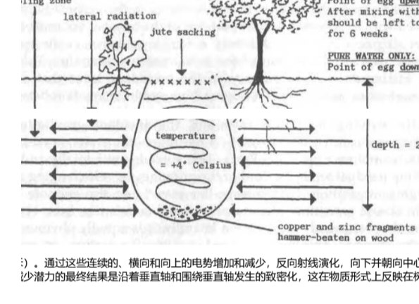
这是舒伯格另一张著名手稿——把堆肥堆直接做成蛋形，以树桩为轴。 它的巧妙在于：蛋形的收敛曲面天然形成「气流缓慢上旋 + 水汽沿壁回渗」的结构， 堆体内部因此长期保持湿润、低温、少氧——正好是冷发酵需要的条件。
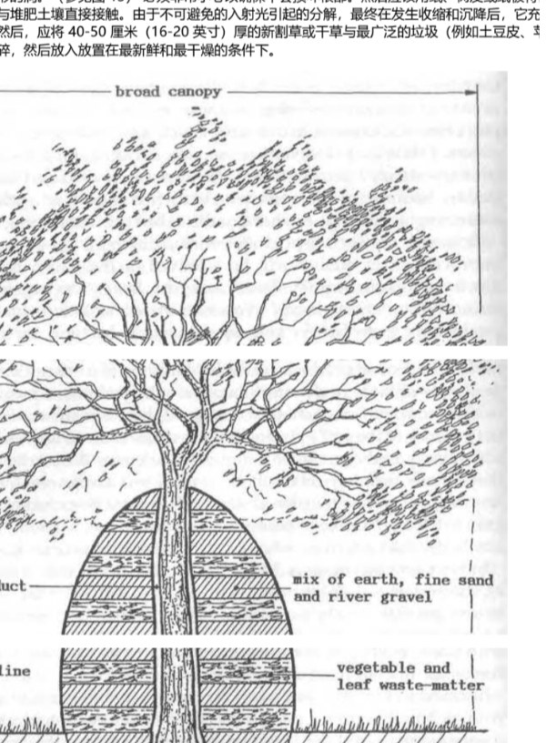
原书对这一段的描述里有几个具体动作：在树冠能遮荫的范围内， 在树干周围建一个蛋形的粪堆；把新鲜草屑或落叶铺到 40–50 厘米（16–20 英寸）厚， 然后用一层土覆盖，防止雨水直接渗进堆体。 作者还特别强调了一条常被忽略的养护逻辑：堆肥位置需要轮作—— 因为土壤需要很长时间才能恢复与重建。
前面三节讲了犁、水、肥三件东西，但它们不是三个独立的项目—— 在同一块地、同一年里，它们有明确的先后顺序。 这一节给出可以直接照着做的时序表、与生机农业现有手段的接口，以及最关键的：怎么验收。
| 序 | 动作 | 频次 / 参数 | 它解决的到底是什么问题 |
|---|---|---|---|
| ① | 金犁浅松 | 5–10 cm · 1–2 次/年 | 铜材替代铁避免破坏土壤毛细管；滚动式翻土不打散微生物栖息地、打破板结——补上「覆膜 + 免耕」缺的活性调节与透气 |
| ② | 天然覆盖 | 秸秆/落叶/堆肥 5–10 cm | 保墒 + 抑草 + 降温 + 提供栖息地 + 供给腐殖质，五合一；替代地膜补上「会呼吸、会变腐殖质、供微生物栖息」这一环 |
| ③ | 免耕直播 | 免翻耕直接播种 | 保护土壤结构、不扰动毛细管；把金犁做不到的大规模效率与最小扰动补齐 |
| ④ | 涡旋活水 | 灌溉主管前串接涡旋段 | 提升输送营养能力、助微生物；与渠氏微质子管串联时，涡旋在前、微质子在后的次序不能颠倒 |
| 环节 | 舒伯格技术 | 生机农法现有手段 | 结合方式 |
|---|---|---|---|
| 水源端 | 涡旋活水（能量态） | 渠氏微质子管（物质态） | 串联：涡旋在前，微质子在后 |
| 土壤端 | 蛋形堆肥 / 冷发酵 | 中华曲菌剂 | 冷发酵有机肥 + 中华曲，两者互不冲突 |
| 介质端 | 铜制农具 | 木鱼石 + 沸石 | 铜具 + 矿物介质，共同减少铁干扰 |
| 节律端 | 温度管理（冷富集） | 频谱信息调整 | 低温活水 + 信息频率写入 |
生机农业本身就是用数据说话的体系，它有自己的硬鉴定门槛。舒伯格这三件技术是否有效， 只要接进去，这几项指标就会说话——这也是判断「要不要继续投人投钱」的唯一依据。
| 指标 | 生机农业门槛 | 对照方式 |
|---|---|---|
| 土壤呼吸强度 | ↑ 30–50% | 同一地块、同季、加装 vs 不加装，第三方实测 |
| 土壤有机质 | ≥ 3%（30 g/kg） | 示范田已达 25.8 g/kg（周边 15.8 g/kg）——看舒伯格措施能否再抬一档 |
| 微生物量 | ≥ 5×10⁶ CFU/g | 冷堆肥 + 中华曲体系理论上支持该项 |
| 蚯蚓数量 | ≥ 10 条/㎡ | 冷堆肥与天然覆盖的直接生物学指标，最直观 |
| 作物糖度 Brix | ≥ 12% | 「找回原味」的量化口径，田间手持折光仪即可测 |
灌溉主管前串接涡旋段（或双曲漏斗）。测：土壤呼吸、Brix、灌溉用水量。
参考基线：双曲漏斗灌溉系统的长期观察记录中，灌溉用水量减少约 30%，绿藻降至自然水平。
围树桩或蛋形坑，测：堆芯温度曲线（必须全程 < 40 ℃）、成品有机质、蚯蚓数量。
关键记录项：温度曲线本身就是数据，它能证明你走的是冷路线还是热路线。
同一台农机，仅更换接触面材料做条带对比（照抄 1948 年克莱斯海姆的条耕设计）。
测：出苗率、株高、穗重、产量、商品率。变量最少、最容易做出结论，建议第一个做。
常规做法 1 亩，其余条件（品种、播期、水肥、管理）完全一致。
没有 D 就没有 ABC。这是这整套技术能否走出「有趣的传统知识」的唯一路径。
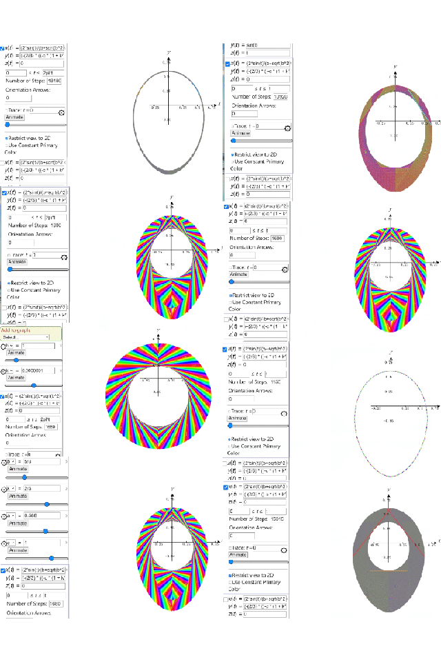